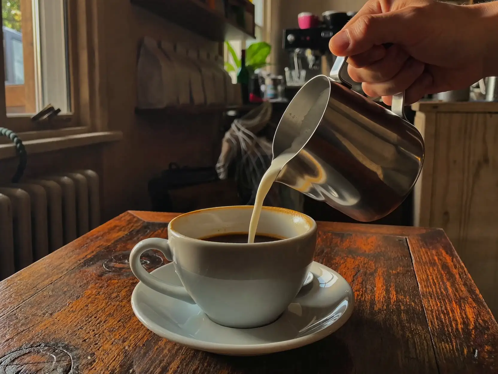
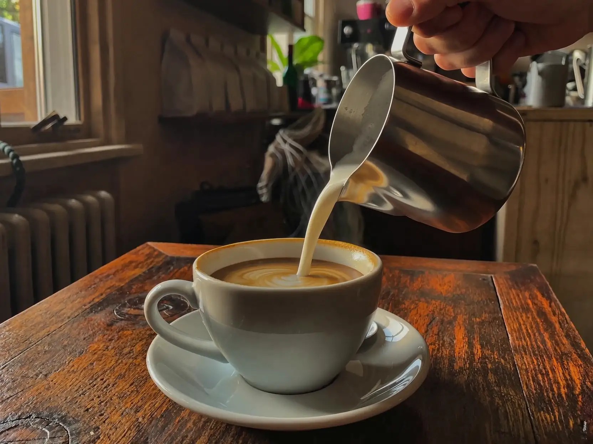
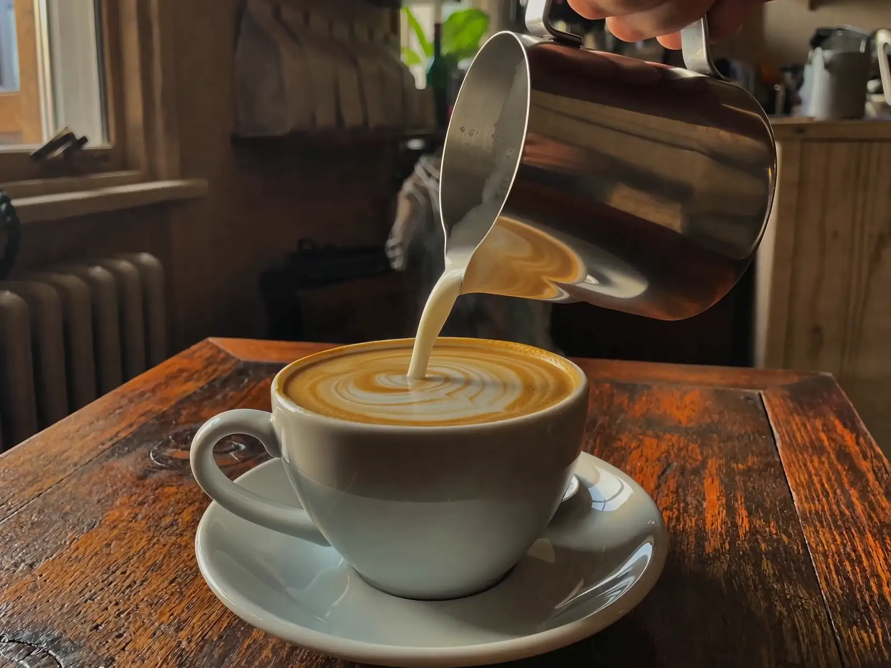
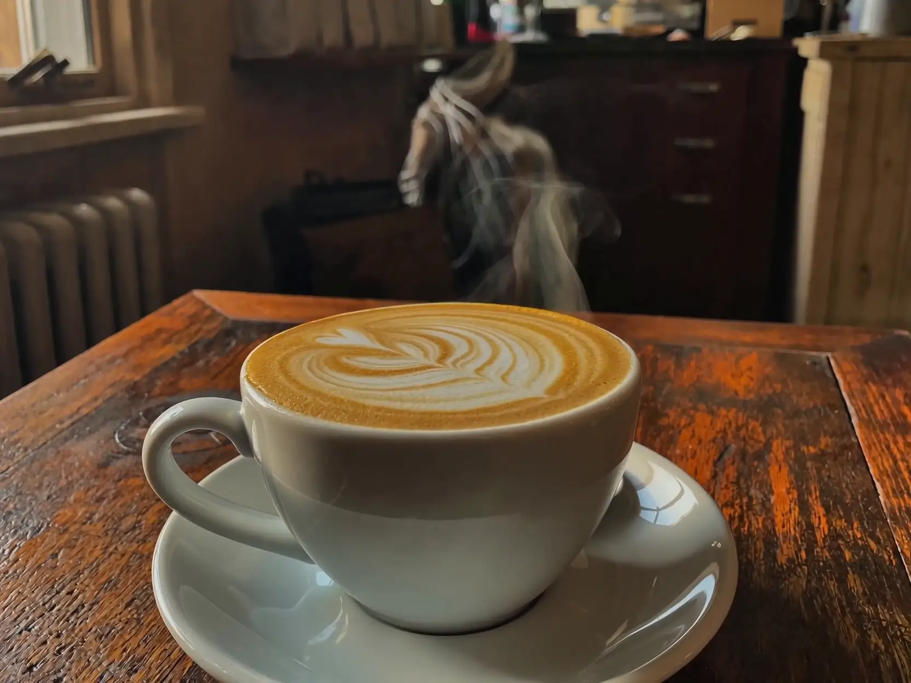

Brew log N°08 / Specialty coffee, Doha
The pour
A cappuccino in eight seconds. Scroll to drive it.
Brew log N°08 / Specialty coffee, Doha
A cappuccino in eight seconds. Scroll to drive it.
Step 01 / Steam
Whole milk stretched to 65 degrees — pouring silk, not foam.
Step 02 / Draw
Low pour, steady hand, one slow wiggle of the wrist.
Step 03 / Settle
No syrup, no stencil, no dusting. The cup is finished the moment the pitcher lifts.
Last frame / Steam rising
One continuous pour becomes 120 stills. Four are worth pinning above the machine.




This page is a demo of a scroll-driven format built for cafés that treat the pour as the product. The footage is the menu — no stock photography, no carousel, one continuous shot the visitor plays with their thumb.